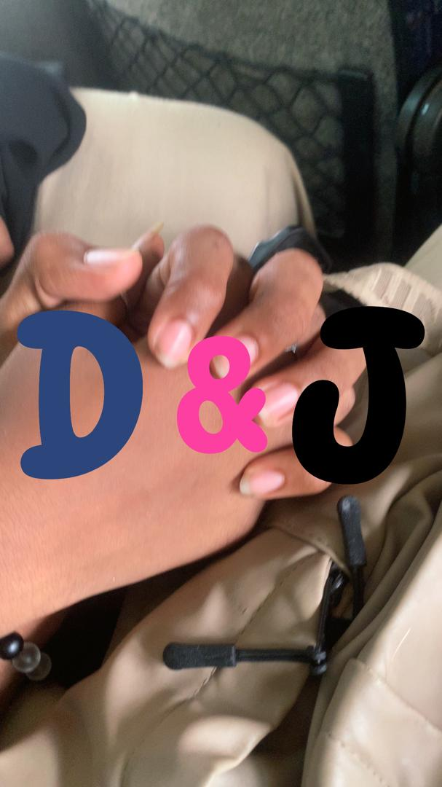

Joyeuse Saint-Valentin, Mon Amour !
Le 14 février... et chaque jour est une fête avec toi.
Le 17 MAI 2025, tu as dit OUI, et ça a changé ma vie. ✨
Notre Histoire...
Moi : L'entrée discrète
_Le 2 mai 2022, à 23h07… une minute ordinaire devenue inoubliable ⏰✨. C’est là que t’es entrée dans ma vie, discrètement, mais pour longtemps (et j’le savais pas encore) 🌙💬. Depuis ce jour, t’as pris une place que personne d’autre n’a pu toucher ❤️🩹. Bestie, amie, lumière, trouble-fête de mon cœur (et un peu mon bordel préféré) ⚡️. J’sais, t’as levé le drapeau blanc du “juste amis” en 2022 ✋💔. Mais j’te jure, j’suis pas venu relancer le jeu — juste te dire ce que mon cœur n’a jamais désinstallé (spoiler : toi) 📲❤️. Je t’aime, pas avec des conditions, pas pour obtenir… mais juste parce que c’est comme ça ♾️. Je t’aime trop, et même si c’est pas réciproque, c’est pas grave 🤷♂️, Parce que je préfère t’aimer en silence que te perdre en criant 🤐➡️🫂. Alors ouais, mon cœur te fait un poème en douce ✍️, Mais c’est pas un piège… c’est juste un “je t’aime” sincère, version moi (et version vrai) ❤️🔥._
Elle : Plus qu'une meilleure amie
Bn toi et moi on se connait depuis un bn bout de temps et tt et de simples amis on est devenu meilleurs amis😌 Je t'aime énormément et je tiens énormément à tw Mais avant c'était de l'amour qu'une meilleure amie devrait avoir pour son meilleur ami Mais mtn c'est plus pareil. Tu es tjrs là quand j'en ai besoin bn je vais pas dire tt ce que tu sais déjà Bn pour faire court Monsieur je t'aime
Moi : Le "Nous" commence
Bon… maintenant que je sais que c’est réciproque (j’ai rechargé mon cœur à 100% depuis que je l’ai su) ❤️⚡ j’me dis… pourquoi pas faire un petit pas en plus ? Toi & moi. En vrai. Pas juste des regards, pas juste des messages Mais un moment à deux — genre sortie, rires, cœur qui bat trop vite et tout 🫶✨ Alors j’te pose ça là, sans pression mais avec beaucoup d’envie : Tu sors avec moi ? (et pas juste pour une balade hein) Mais pour un vrai “nous” qui commence ? ♾️❤️🔥
Elle : "Oui Monsieur 😊❤️"
Le plus beau "Oui" de ma vie, celui qui a fait basculer notre histoire le 17 mai 2025.
Nos Mains Jointes
Ces mains qui se sont cherchées, trouvées, et qui ne veulent plus se lâcher.
